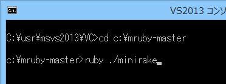

ここではmrubyをScenarioModに組み込む上では避けて通れない、
mrubyのcp932対応や、必要な措置について記載しています。
mruby は、まつもとゆきひろ氏が中心となって開発しているRubyを、組み込み向けに軽量・小型化した言語です。
RubyとLuaは誕生時期がほぼ同時期でですが、
LuaがC言語アプリケーションの組み込み用途として設計され、数多く採用されているに対し、
Rubyは、Perlの代用やRuby on Rails を切っ掛けとしてWeb方面へと花開きました。
mrubyとは、そのようなrubyの応用範囲を広げるべく、組み込み用途向けに仕立て直したものです。
しかし、この分野のでLuaの優位性はかなり高く、2015年現在、mrubyを採用するプロダクトは未だ数は少ないです。
ですが、元々Rubyの使い手であれば、導入は一考に値するでしょう。
これらダウンロード対象となるソースは、mrubyをcp932(≒sjis)に対応したバージョン一式である。
この章の内容を理解する上で参考にしてください。
天翔記本体は、cp932で構成されており、各種データも全てcp932である。
そして、ScenarioModもcp932であり、ModDebuggerもcp932である。
以上から、mrubyをScenarioModで使う上においては、mruby本体のレベルからcp932にある程度は対応する必要がある。
ここに記載されている情報は、mruby v1.1.0 2014/11/19版でのものとなる
mrubyのバージョンアップに伴い、コンパイルの仕方やファイル構成等が変更になっている可能性が高いことを踏まえた上で記事を読んで欲しい。
Github の mruby から「Download Zip」等でダウンロード。
ruby for windows 系が入ってない人は、rubyを入れる。
コンパイルに必要です。
rubyinstaller.org
(パスを通す必要あり)
bison for windows 系が入ってない人は、bisonを入れる。
コンパイルに必要です。
bison for windows
(パスを通す必要あり)
luaもそうですが、cp932に対応といっても、フルに対応する必要はありません。
いわば、「バイト列」としての扱いのまま、cp932文字コードで「エラー」が出ない状態であれば十分と言えます。
いわゆるLuaのcp932化と同じレベルものものを目指します。
まず、mbenc.hというファイルを作ります。
/* ** mbenc.h : MS-Windows用マクロ ** ** mruby の cp932 encoding用 ** by 翔.jp */ #ifndef mbenc_h #define mbenc_h #define MRUBY_USE_ENC_CP932 1 /* -- japanese cp932 -- */ #if MRUBY_USE_ENC_CP932 #define is_lead_byte(c) ((0x81 <= ((unsigned char) (c)) && ((unsigned char) (c)) <= 0x9f) || (0xe0 <= ((unsigned char) (c)) && ((unsigned char) (c)) <=0xfc)) #else #define is_lead_byte(c) (0) #endif #endif
このファイルをmrubyの「\mruby-master\include」ディレクトリの中に入れましょう。
次に、parse.yというファイルが、mruby-master\src\parse.y という場所にあります。
static int
parse_string(parser_state *p)
の関数のwhile文内の一番下あたりが、
pushback(p, c);
return tLITERAL_DELIM;
}
else {
pushback(p, c);
tokfix(p);
yylval.nd = new_str(p, tok(p), toklen(p));
return tSTRING_MID;
}
}
tokadd(p, c);
}
tokfix(p);
p->lstate = EXPR_END;
end_strterm(p);
if (type & STR_FUNC_XQUOTE) {
のようになっていますので、
(※バージョンが違うと少々違うかもしれませんが、とりあえず似た場所があるはずです)
pushback(p, c);
return tLITERAL_DELIM;
}
else {
pushback(p, c);
tokfix(p);
yylval.nd = new_str(p, tok(p), toklen(p));
return tSTRING_MID;
}
}
{
int is_cp932 = 0; /* cp932用 */
if ( is_lead_byte( c ) ) { /* cp932の範囲だったらフラグ立て */
is_cp932 = 1;
}
tokadd(p, c); // 文字コードに関わりない処理。
if ( is_cp932 && c != EOF ) { /* cp932の範囲だったらもうひとつ無条件で処理してしまう */
c = nextc(p);
tokadd(p, c);
is_cp932 = 0;
}
}
}
tokfix(p);
p->lstate = EXPR_END;
end_strterm(p);
if (type & STR_FUNC_XQUOTE) {
と書き換えます。
同じファイルの先頭のヘッダー部分に
#include "mruby.h" #include "mruby/compile.h" #include "mruby/proc.h" #include "mruby/error.h" #include "node.h" #include "mrb_throw.h" #include "mbenc.h" // for cp932
を足しておきましょう。
さて、Windowsでは通常、VisualStudioでプログラミングするでしょう。
その場合、mrubyはVC++ Desktop 2013以上でコンパイルすることとなります。
さて、それを踏まえて
mruby-master\tasks\toolchains\visualcpp.rake
を開けて、以下の強調してる行のオプションを変更します。
MRuby::Toolchain.new(:visualcpp) do |conf|
[conf.cc].each do |cc|
cc.command = ENV['CC'] || 'cl.exe'
# C4013: implicit function declaration
cc.flags = [ENV['CFLAGS'] || %w(/c /nologo /W3 /we4013 /Zi /MT /Ox /Oi /Ot /D_CRT_SECURE_NO_WARNINGS)]
cc.defines = %w(DISABLE_GEMS MRB_STACK_EXTEND_DOUBLING)
cc.option_include_path = '/I%s'
cc.option_define = '/D%s'
cc.compile_options = "%{flags} /Fo%{outfile} %{infile}"
end
[conf.cxx].each do |cxx|
cxx.command = ENV['CXX'] || 'cl.exe'
cxx.flags = [ENV['CXXFLAGS'] || ENV['CFLAGS'] || %w(/c /nologo /W3 /Zi /MT /Ox /Oi /Ot /EHsc /D_CRT_SECURE_NO_WARNINGS)]
VC++ Desktop2013の「VS2013 x86 Native Tools コマンド プロンプトを開く」を使います。
VC++ Desktop2013 ではショートカットが存在しない場合がありますので、無い場合は自分で制作しましょう。
デスクトップにショートカットを作成して、
%comspec% /k ""C:\Program Files (x86)\Microsoft Visual Studio 13.0\VC\vcvarsall.bat"" x86
みたいなのを作成します。
実際には、VC++2013をインストールしたディレクトリにあわせて書き換えてください。
先述のVC専用コンソールに話を戻して、コンソールを立ち上げて、
そこまで、ディレクトリを移動してから、

ruby ./minirake
コンパイルできない場合、大抵「Cの関数」が、「VC++に無い」というだけです。
ほとんどの場合は、エラーが出る該当の関数をWEBで検索すれば対処方法がわかります。
大抵は、「関数名の先頭にアンダーバー」を付けて、「何らかのヘッダーを追加すれば」
同様の関数が存在するのでコンパイルが通ります。
cp932化した状態でコンパイルさえできてしまえば、後は通常のmrubyと変わるものではありません。
普通にScenarioModやShiftJis系アプリに組み込めますので、
mrubyの使い方などをWebで調べていけば、問題なく使えるはずです。